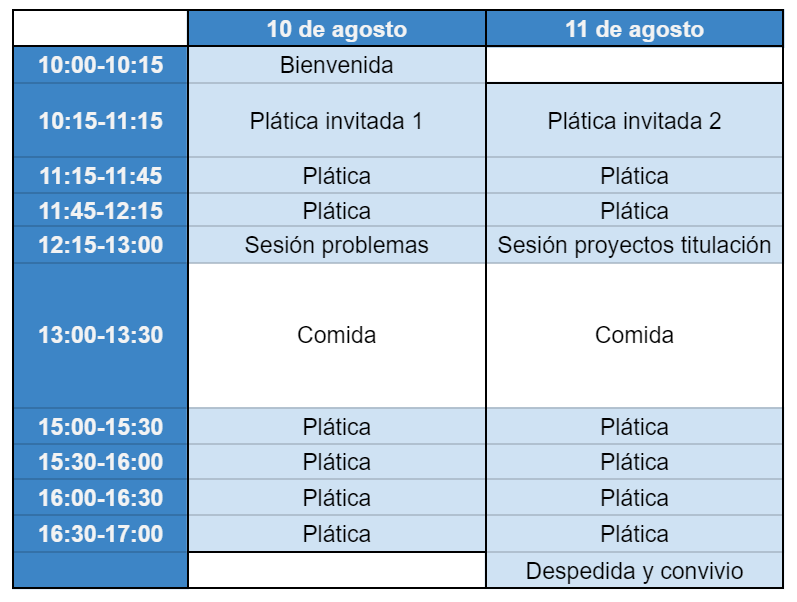

Encuentro Nacional de Computación 2021, SMCC
Taller de Geometría Discreta y Computacional
Acerca de
Este taller se organiza en el marco del Encuentro Nacional de Computación de la Sociedad Mexicana de Ciencia de la Computación A.C. Todo el congreso se realizará de manera virtual. La institución sede es la ENES-Morelia, UNAM en conjunto con la Universidad Michoacana de San Nicolás de Hidalgo
Objetivo del taller
Identificar a la comunidad de investigadores y estudiantes mexicanos que se dediquen a la geometría discreta y computacional para ofrecerles un espacio de intercambio académico que permita fortalecer sus vínculos y que fomente la colaboración entre investigadores con formación en el aspecto discreto e investigadores con formación en el aspecto computacional.
Temas
Recibiremos contribuiciones relacionadas con distintos temas en geometría discreta y computacional. Entre ellas se encuentran, pero no estan limitadas a, las siguientes.
- Algoritmos en geometría
- Conjuntos convexos
- Estructuras de datos geométricas
- Geometría de transversales y teoremas tipo Helly
- Politopos
- Problemas extremales geométricos
Actividades
- Conferencias invitadas
- Pláticas de investigación
- Sesión de problemas
- Sesión de propuestas de tesis (licenciatura y posgrado)
- Pósters
Fechas importantes
- Recepción de trabajos: 31 de mayo de 2021
- Revisión de trabajos: 1 al 20 de junio de 2021
- Respuesta a los autores: 21 de junio de 2021
- Versión final: 29 de junio de 2021
- Fechas del taller: 10 y 11 de agosto de 2021
Preparación y envío de trabajos
Pláticas de investigación
Para solicitar una plática, se deberá enviar un extended abstract que detalle los resultados del trabajo con las siguientes características:
- Usar la plantilla del ENC 2021 SMCC
- Máximo 4 cuartillas
- Bibliografía
Opcionalmente se puede hacer referencia a una versión completa del trabajo. Sin embargo, el contenido en el
abstract extendido debe proveer suficiente evidencia para determinar la originalidad, interés y correctitud de los resultados.
El Comité Técnico determinará los trabajos más adecuados para el taller en términos de los criterios anteriores. A los trabajos aceptados se les asignará una sesión de media hora para su presentación.
Pósters
Para solicitar presentar un póster, se deberá enviar una propuesta de póster con las siguientes características:
- Usar la plantilla del taller
- Máximo 2 cuartillas
- Bibliografía
El Comité Técnico determinará los trabajos más adecuados para el taller en términos de orginalidad, interés y correctitud de los resultados. Los pósters aceptados deberán prepararse con una plantilla por determinar. Se subirán a este sitio y estarán disponibles durante toda la conferencia.
Problemas abiertos y propuestas de tesis
Para el envío de problemas abiertos y propuestas de tesis se deberá enviar un documento con las siguientes características.
- Usar la plantilla del taller
- Máximo 2 cuartillas
- Enunciar contexto, definiciones y problema a estudiar
- Dar bibliografía auxiliar
Programa tentativo

Organización del taller
Comité organizador
- Leonardo Ignacio Martínez Sandoval (chair) - Facultad de Ciencias, UNAM
Comité Técnico
- Por determinar
- Por determinar
- Por determinar
Enlaces útiles